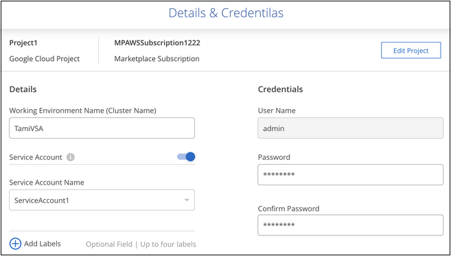

Notas de la versión
Notas de la versión
Haga un backup de los datos de Cloud Volumes ONTAP en Google Cloud Storage
 Sugerir cambios
Sugerir cambios
Complete unos pasos para empezar a realizar backups de datos de volumen desde sus sistemas Cloud Volumes ONTAP en Google Cloud Storage.
Inicio rápido
Empiece rápidamente siguiendo estos pasos o desplácese hacia abajo hasta las secciones restantes para obtener todos los detalles.
 Verifique la compatibilidad con la configuración
Verifique la compatibilidad con la configuración-
Está ejecutando Cloud Volumes ONTAP 9,8 o posterior en GCP (se recomienda ONTAP 9.8P13 y versiones posteriores).
-
Tiene una suscripción válida para GCP para el espacio de almacenamiento donde se ubicará la copia de seguridad.
-
Tiene una cuenta de servicio en Google Cloud Project que tiene el rol de administrador de almacenamiento predefinido.
-
Se ha suscrito a "Oferta de backup de BlueXP Marketplace", o usted ha comprado "y activado" Una licencia BYOL de backup y recuperación de BlueXP de NetApp.
 Prepare el conector BlueXP
Prepare el conector BlueXPSi ya tienes un conector implementado en una región de GCP, entonces estás todo listo. De lo contrario, tendrás que instalar un conector BlueXP en GCP para realizar backups de los datos de Cloud Volumes ONTAP en Google Cloud Storage. El Conector se puede instalar en un sitio con acceso completo a Internet (“modo estándar”) o con conectividad a Internet limitada (“modo restringido”).
 Verifique los requisitos de licencia
Verifique los requisitos de licenciaTendrás que comprobar los requisitos de licencias tanto para Google Cloud como para BlueXP.
 Compruebe los requisitos de red de ONTAP para replicar volúmenes
Compruebe los requisitos de red de ONTAP para replicar volúmenesAsegúrese de que los sistemas de origen y destino cumplen con los requisitos de red y versión de ONTAP.
 Habilita el backup y la recuperación de datos de BlueXP
Habilita el backup y la recuperación de datos de BlueXPSeleccione el entorno de trabajo y haga clic en Activar > copia de seguridad de volúmenes junto al servicio copia de seguridad y recuperación del panel derecho.
 Active backups en sus ONTAP Volumes
Active backups en sus ONTAP VolumesSiga el asistente de configuración para seleccionar las políticas de replicación y backup que usará y los volúmenes de los que desea realizar un backup.
Verifique la compatibilidad con la configuración
Lea los siguientes requisitos para asegurarse de que tiene una configuración compatible antes de empezar a realizar backups de volúmenes en Google Cloud Storage.
La siguiente imagen muestra cada componente y las conexiones que necesita preparar entre ellos.
Opcionalmente, puede conectarse a un sistema ONTAP secundario para volúmenes replicados también mediante la conexión pública o privada.

- Versiones de ONTAP compatibles
-
Se recomienda un mínimo de ONTAP 9,8; ONTAP 9.8P13 y posterior.
- Regiones compatibles de GCP
-
El backup y la recuperación de datos de BlueXP se admiten en todas las regiones de GCP "Donde se admite Cloud Volumes ONTAP".
- Cuenta de servicio de GCP
-
Es necesario tener una cuenta de servicio en Google Cloud Project que tenga el rol de administrador de almacenamiento predefinido. "Aprenda a crear una cuenta de servicio".
Verifique los requisitos de licencia
Para obtener la licencia PAYGO de backup y recuperación de BlueXP, hay una suscripción de BlueXP disponible en Google Marketplace que permite la implementación de backup y recuperación de datos de Cloud Volumes ONTAP y BlueXP. Necesita hacerlo "suscríbase a esta suscripción a BlueXP" Antes de habilitar el backup y la recuperación de datos de BlueXP. La facturación para el backup y la recuperación de BlueXP se realiza a través de esta suscripción. "Puede suscribirse desde la página Detalles Credentials del asistente de entorno de trabajo".
Para la licencia BYOL de backup y recuperación de BlueXP, necesita el número de serie de NetApp que le permita usar el servicio durante la duración y la capacidad de la licencia. "Aprenda a gestionar sus licencias BYOL".
Además, necesita una suscripción de Google para el espacio de almacenamiento en el que se localizarán los backups.
Prepare el conector BlueXP
El conector debe estar instalado en una región de Google con acceso a Internet.
Verifique o agregue permisos al conector
Para utilizar la funcionalidad de «búsqueda y restauración» de backup y recuperación de BlueXP, necesitas contar con permisos específicos en la función del conector para que pueda acceder al servicio de Google Cloud BigQuery. Consulte los siguientes permisos y siga los pasos si necesita modificar la directiva.
-
En la "Consola de Google Cloud", Vaya a la página roles.
-
Mediante la lista desplegable situada en la parte superior de la página, seleccione el proyecto o la organización que contiene la función que desea editar.
-
Seleccione un rol personalizado.
-
Seleccione Editar rol para actualizar los permisos del rol.
-
Seleccione Agregar permisos para agregar los siguientes permisos nuevos al rol.
bigquery.jobs.get bigquery.jobs.list bigquery.jobs.listAll bigquery.datasets.create bigquery.datasets.get bigquery.jobs.create bigquery.tables.get bigquery.tables.getData bigquery.tables.list bigquery.tables.create -
Selecciona Actualizar para guardar el rol editado.
Información necesaria para el uso de claves de cifrado gestionadas por el cliente (CMEK)
Puede utilizar sus propias claves gestionadas por el cliente para el cifrado de datos en lugar de utilizar las claves de cifrado predeterminadas gestionadas por Google. Se admiten tanto claves entre regiones como entre proyectos, por lo que puede elegir un proyecto para un depósito que sea diferente al proyecto de la clave CMEK. Si planea utilizar sus propias claves gestionadas por el cliente:
-
Necesitará tener el llavero y el nombre de la clave para poder agregar esta información en el asistente de activación. "Obtenga más información sobre las claves de cifrado gestionadas por el cliente".
-
Deberá verificar que estos permisos necesarios se incluyan en la función del conector:
cloudkms.cryptoKeys.get
cloudkms.cryptoKeys.getIamPolicy
cloudkms.cryptoKeys.list
cloudkms.cryptoKeys.setIamPolicy
cloudkms.keyRings.get
cloudkms.keyRings.getIamPolicy
cloudkms.keyRings.list
cloudkms.keyRings.setIamPolicy-
Deberás verificar que la API de Google “Cloud Key Management Service (KMS)” esté habilitada en tu proyecto. Consulte "Documentación de Google Cloud: Habilitar API" para obtener más detalles.
Consideraciones de CMEK:
-
Se admiten tanto las claves generadas por software como las de HSM (respaldadas por hardware).
-
Se admiten las claves de Cloud KMS creadas o importadas recientemente.
-
Sólo se admiten claves regionales; las claves globales no son compatibles.
-
Actualmente, sólo se admite el propósito "cifrado/descifrado simétrico".
-
Al agente de servicios asociado con la cuenta de almacenamiento se le asigna el rol IAM «CryptoKey Encrypter/Decrypter (roles/cloudkms.cryptoKeyEncrypterDecrypter)» mediante el backup y la recuperación de datos de BlueXP.
Crea tus propios cubos
De forma predeterminada, el servicio crea buckets para usted. Si desea utilizar sus propios depósitos, puede crearlos antes de iniciar el asistente de activación de copias de seguridad y, a continuación, seleccionar esos depósitos en el asistente.
Compruebe los requisitos de red de ONTAP para replicar volúmenes
Si planeas crear volúmenes replicados en un sistema ONTAP secundario mediante el backup y la recuperación de datos de BlueXP, asegúrese de que los sistemas de origen y destino cumplan los siguientes requisitos de red.
Requisitos de red de ONTAP en las instalaciones
-
Si el clúster se encuentra en sus instalaciones, debe tener una conexión entre la red corporativa y la red virtual en el proveedor de cloud. Normalmente se trata de una conexión VPN.
-
Los clústeres de ONTAP deben cumplir con requisitos adicionales de subred, puerto, firewall y clúster.
Al poder replicar en Cloud Volumes ONTAP o en sistemas en las instalaciones, revise los requisitos de los pares de los sistemas de ONTAP en las instalaciones. "Ver requisitos previos para la relación de clústeres entre iguales en la documentación de ONTAP".
Requisitos de red de Cloud Volumes ONTAP
-
El grupo de seguridad de la instancia debe incluir las reglas de entrada y salida necesarias: Específicamente, reglas para ICMP y los puertos 11104 y 11105. Estas reglas se incluyen en el grupo de seguridad predefinido.
-
Para replicar datos entre dos sistemas Cloud Volumes ONTAP en subredes diferentes, las subredes deben enrutarse juntas (esta es la configuración predeterminada).
Habilita el backup y la recuperación de datos de BlueXP en Cloud Volumes ONTAP
Habilitar la copia de seguridad y recuperación de BluXP es fácil. Los pasos difieren ligeramente dependiendo de si tiene un sistema Cloud Volumes ONTAP existente o uno nuevo.
Habilitar la copia de seguridad y recuperación de BlueXP en un nuevo sistema
El backup y la recuperación de BlueXP se pueden habilitar cuando completas el asistente del entorno de trabajo para crear un nuevo sistema Cloud Volumes ONTAP.
Debe tener una cuenta de servicio configurada. Si no selecciona ninguna cuenta de servicio al crear el sistema Cloud Volumes ONTAP, tendrá que apagar el sistema y agregar la cuenta de servicio a Cloud Volumes ONTAP desde la consola de GCP.
Consulte "Lanzamiento de Cloud Volumes ONTAP en GCP" Para conocer los requisitos y detalles de cómo crear el sistema Cloud Volumes ONTAP.
-
En BlueXP Canvas, selecciona Agregar entorno de trabajo, elige el proveedor de la nube y selecciona Agregar nuevo. Selecciona Crear Cloud Volumes ONTAP.
-
Elija una ubicación: Seleccione Google Cloud Platform.
-
elegir Tipo: Seleccione Cloud Volumes ONTAP (ya sea de un solo nodo o de alta disponibilidad).
-
Detalles y credenciales: Introduzca la siguiente información:
-
Haga clic en Editar proyecto y seleccione un proyecto nuevo si el que desea utilizar es diferente del proyecto predeterminado (donde reside el conector).
-
Especifique el nombre del clúster.
-
Active el conmutador cuenta de servicio y seleccione la cuenta de servicio que tenga la función predefinida Administrador de almacenamiento. Esto es necesario para habilitar los backups y la organización en niveles.
-
Especifique las credenciales.
Asegúrese de que existe una suscripción a GCP Marketplace.

-
-
Servicios: Deja habilitado el servicio de copia de seguridad y recuperación de BlueXP y haz clic en Continuar.

-
Complete las páginas del asistente para implementar el sistema como se describe en "Lanzamiento de Cloud Volumes ONTAP en GCP".

|
Para modificar la configuración de copia de seguridad o agregar replicación, consulte "Gestión de backups de ONTAP". |
El backup y la recuperación de datos de BlueXP están activados en el sistema. Después de crear volúmenes en estos sistemas Cloud Volumes ONTAP, inicie el backup y la recuperación de datos de BlueXP y. "active el backup en cada volumen que desee proteger".
Habilitar la copia de seguridad y recuperación de BlueXP en un sistema existente
Puedes habilitar el backup y la recuperación de datos de BlueXP en cualquier momento directamente desde el entorno de trabajo.
-
En BlueXP Canvas, selecciona el entorno de trabajo y selecciona Habilitar junto al servicio de copia de seguridad y recuperación en el panel derecho.
Si el destino de Google Cloud Storage para sus copias de seguridad existe como un entorno de trabajo en el lienzo, puede arrastrar el clúster al entorno de trabajo de Google Cloud Storage para iniciar el asistente de configuración.

|
|
Para modificar la configuración de copia de seguridad o agregar replicación, consulte "Gestión de backups de ONTAP". |
Active backups en sus ONTAP Volumes
Active los backups en cualquier momento directamente desde su entorno de trabajo local.
Un asistente le llevará por los siguientes pasos principales:
También puede hacerlo Muestra los comandos de la API en el paso de revisión, puede copiar el código para automatizar la activación de la copia de seguridad para entornos de trabajo futuros.
Inicie el asistente
-
Acceda al asistente Activar copia de seguridad y recuperación de una de las siguientes maneras:
-
En el lienzo de BlueXP, selecciona el entorno de trabajo y selecciona Habilitar > Volúmenes de copia de seguridad junto al servicio de copia de seguridad y recuperación en el panel derecho.

Si el destino de GCP para sus backups existe como entorno de trabajo en Canvas, puede arrastrar el clúster de ONTAP al almacenamiento de objetos de GCP.
-
Seleccione Volúmenes en la barra Copia de seguridad y recuperación. En la pestaña Volúmenes, selecciona las Acciones
 Y seleccione Activar copia de seguridad para un solo volumen (que aún no tiene replicación o copia de seguridad en el almacenamiento de objetos ya activado).
Y seleccione Activar copia de seguridad para un solo volumen (que aún no tiene replicación o copia de seguridad en el almacenamiento de objetos ya activado).
La página Introducción del asistente muestra las opciones de protección, incluidas las instantáneas locales, la replicación y las copias de seguridad. Si realizó la segunda opción en este paso, aparecerá la página Definir estrategia de copia de seguridad con un volumen seleccionado.
-
-
Continúe con las siguientes opciones:
-
Si ya tienes un conector BlueXP, ya lo tendrás todo. Solo tienes que seleccionar Siguiente.
-
Si aún no tienes un conector BlueXP, aparece la opción Add a Connector. Consulte Prepare el conector BlueXP.
-
Seleccione los volúmenes de los que desea realizar el backup
Elija los volúmenes que desea proteger. Un volumen protegido es uno que tiene uno o varios de los siguientes: Política de Snapshot, política de replicación, backup en política de objetos.
Puede optar por proteger los volúmenes de FlexVol o FlexGroup; sin embargo, no puede seleccionar una combinación de estos volúmenes al activar el backup para un entorno de trabajo. Descubra cómo "active el backup para volúmenes adicionales en el entorno de trabajo" (FlexVol o FlexGroup) después de configurar el backup de los volúmenes iniciales.

|
|
Tenga en cuenta que si los volúmenes que elija ya tienen aplicadas políticas de Snapshot o de replicación, las políticas que seleccione más adelante sobrescribirán estas políticas existentes.
-
En la página Select Volumes, seleccione el o los volúmenes que desea proteger.
-
Opcionalmente, filtre las filas para mostrar solo los volúmenes con ciertos tipos de volumen, estilos y más para facilitar la selección.
-
Después de seleccionar el primer volumen, puede seleccionar All FlexVol Volumes (los volúmenes de FlexGroup se pueden seleccionar de uno por vez solo). Para realizar un backup de todos los volúmenes FlexVol existentes, active primero un volumen y, a continuación, marque la casilla en la fila del título. (
 ).
). -
Para realizar un backup de volúmenes individuales, active la casilla de cada volumen (
 ).
).
-
-
Seleccione Siguiente.
Defina la estrategia de backup
Definir la estrategia de backup implica configurar las siguientes opciones:
-
Tanto si desea una como todas las opciones de backup: Copias Snapshot locales, replicación y backup en el almacenamiento de objetos
-
Arquitectura
-
Política de Snapshot local
-
Objetivo y política de replicación
Si los volúmenes seleccionados tienen distintas políticas de Snapshot y de replicación a las políticas seleccionadas en este paso, se sobrescribirán las políticas existentes. -
Backup en la información de almacenamiento de objetos (proveedor, cifrado, conexión a redes, política de backup y opciones de exportación).
-
En la página Definir estrategia de copia de seguridad, seleccione una o todas las siguientes opciones. Los tres están seleccionados de forma predeterminada:
-
Instantáneas locales: Si está realizando una replicación o una copia de seguridad en el almacenamiento de objetos, se deben crear instantáneas locales.
-
Replicación: Crea volúmenes replicados en otro sistema de almacenamiento ONTAP.
-
Backup: Realiza copias de seguridad de los volúmenes en el almacenamiento de objetos.
-
-
Arquitectura: Si elige replicación y copia de seguridad, elija uno de los siguientes flujos de información:
-
Cascading: La información fluye del sistema de almacenamiento primario al secundario, y del almacenamiento secundario al objeto.
-
Fan Out: La información fluye del sistema de almacenamiento primario al secundario and del almacenamiento primario al objeto.
Para obtener información detallada sobre estas arquitecturas, consulte "Planifica tu proceso de protección".
-
-
Instantánea local: Elija una política de Snapshot existente o cree una.
Para crear una política personalizada antes de activar el backup, consulte "Crear una política". Para crear una política, selecciona Crear nueva política y haz lo siguiente:
-
Introduzca el nombre de la política.
-
Seleccione hasta 5 horarios, normalmente de diferentes frecuencias.
-
Seleccione Crear.
-
-
Replicación: Establezca las siguientes opciones:
-
Objetivo de replicación: Seleccione el entorno de trabajo de destino y SVM. De manera opcional, seleccione el agregado o los agregados de destino y el prefijo o sufijo que se agregará al nombre del volumen replicado.
-
Política de replicación: Elija una política de replicación existente o cree una.
Para crear una política personalizada antes de activar la replicación, consulte "Crear una política". Para crear una política, selecciona Crear nueva política y haz lo siguiente:
-
Introduzca el nombre de la política.
-
Seleccione hasta 5 horarios, normalmente de diferentes frecuencias.
-
Seleccione Crear.
-
-
-
Copia de seguridad en Object: Si seleccionaste Copia de seguridad, establece las siguientes opciones:
-
Proveedor: Selecciona Google Cloud.
-
Configuración del proveedor: Introduzca los detalles del proveedor y la región donde se almacenarán las copias de seguridad.
Cree un nuevo depósito o seleccione uno existente.
-
Clave de cifrado: Si creaste un nuevo cubo de Google, ingresa la información de la clave de cifrado que se te haya proporcionado del proveedor. Elige si usarás las claves de cifrado predeterminadas de Google Cloud o si elegirás tus propias claves gestionadas por el cliente en tu cuenta de Google para gestionar el cifrado de tus datos.
Si decide utilizar sus propias claves gestionadas por el cliente, introduzca el almacén de claves y la información de clave.
Si elegiste un depósito de Google Cloud existente, la información de cifrado ya está disponible, por lo que no necesitas introducirla ahora. -
Política de copia de seguridad: Seleccione una política de almacenamiento de copia de seguridad a objeto existente o cree una.
Para crear una política personalizada antes de activar el backup, consulte "Crear una política". Para crear una política, selecciona Crear nueva política y haz lo siguiente:
-
Introduzca el nombre de la política.
-
Seleccione hasta 5 horarios, normalmente de diferentes frecuencias.
-
Seleccione Crear.
-
-
Exporte las copias Snapshot existentes al almacenamiento de objetos como copias de seguridad: Si hay alguna copia Snapshot local para volúmenes en este entorno de trabajo que coincida con la etiqueta de programación de copia de seguridad que acaba de seleccionar para este entorno de trabajo (por ejemplo, diario, semanal, etc.), se muestra este mensaje adicional. Marque esta casilla para que se copien todas las copias Snapshot históricas en el almacenamiento de objetos como archivos de backup a fin de garantizar la protección más completa de los volúmenes.
-
-
Seleccione Siguiente.
Revise las selecciones
Esta es la oportunidad de revisar sus selecciones y hacer ajustes, si es necesario.
-
En la página Review, revise las selecciones.
-
Opcionalmente marque la casilla para sincronizar automáticamente las etiquetas de la política de Snapshot con las etiquetas de la política de replicación y copia de seguridad. De este modo, se crea Snapshot con una etiqueta que coincide con las etiquetas de las políticas de replicación y backup.
-
Seleccione Activar copia de seguridad.
El backup y la recuperación de datos de BlueXP comienzan a realizar los backups iniciales de tus volúmenes. La transferencia básica del volumen replicado y el archivo de backup incluye una copia completa de los datos del sistema de almacenamiento principal. Las transferencias posteriores contienen copias diferenciales de los datos del sistema de almacenamiento primario contenidos en las copias Snapshot.
Se crea un volumen replicado en el clúster de destino que se sincronizará con el volumen del sistema de almacenamiento principal.
Se crea un depósito de Google Cloud Storage en la cuenta de servicio indicada por la clave de acceso de Google y la clave secreta que ha introducido, y los archivos de copia de seguridad se almacenan allí.
Las copias de seguridad se asocian de forma predeterminada con la clase de almacenamiento Standard. Puede utilizar las clases de almacenamiento de bajo coste Nearline, Coldline o Archive. Sin embargo, configuras la clase de almacenamiento con Google, no con la interfaz de usuario de backup y recuperación de BlueXP. Consulte el tema de Google "Cambiar la clase de almacenamiento predeterminada de un bloque" para obtener más detalles.
La consola de backup de volumen se muestra para poder supervisar el estado de los backups.
También es posible supervisar el estado de los trabajos de backup y restauración mediante la "Panel de control de trabajos".
Muestra los comandos de la API
Puede ser conveniente mostrar y copiar, opcionalmente, los comandos API que se utilizan en el asistente Activar backup y recuperación. Se recomienda hacer esto para automatizar la activación del backup en entornos de trabajo futuros.
-
En el asistente Activar copia de seguridad y recuperación, seleccione Ver solicitud de API.
-
Para copiar los comandos en el portapapeles, seleccione el icono Copiar.
El futuro
-
Puede hacerlo "gestione los archivos de copia de seguridad y las políticas de copia de seguridad". Esto incluye iniciar y detener copias de seguridad, eliminar copias de seguridad, agregar y cambiar la programación de copia de seguridad, etc.
-
Puede hacerlo "gestione la configuración de backup en el nivel del clúster". Esto incluye cambiar el ancho de banda de red disponible para cargar backups en el almacenamiento de objetos, cambiar la configuración de backup automático para volúmenes futuros, etc.
-
También puede hacerlo "restaure volúmenes, carpetas o archivos individuales desde un archivo de backup" A un sistema Cloud Volumes ONTAP en Google o a un sistema ONTAP en las instalaciones.